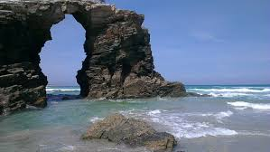
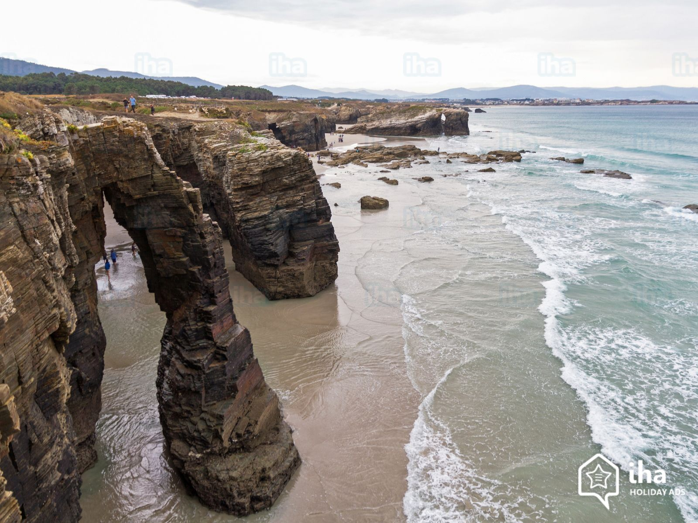
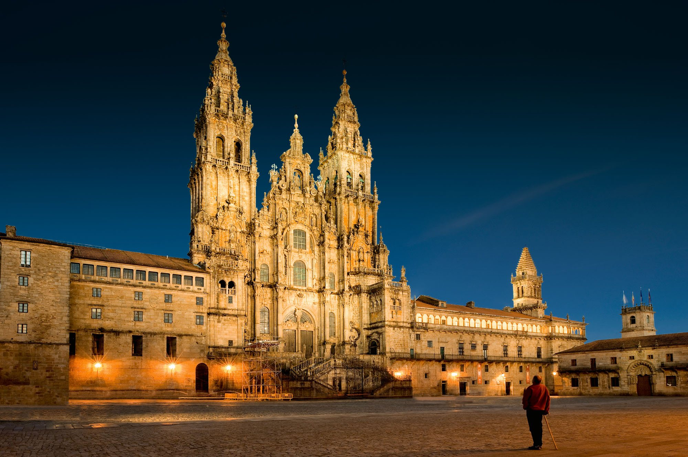
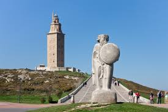
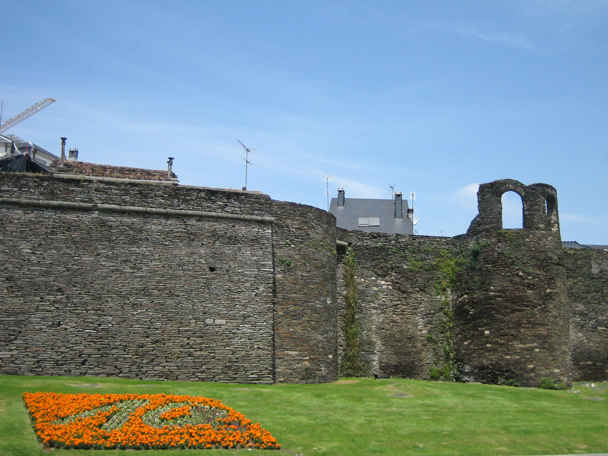

This incredible beach on Spain’s northern coast in Galicia near Ribadeo, often appears on the Best Beaches in the World lists. It’s also known as the Beach of the Holy Waters.Its huge rock formations, dramatic arches and hidden caves set it apart from other beaches!

It's named after the huge rock formations that resemble the flying buttresses found in cathedrals.
The Cathedrals Beach main attraction is the walk between the cliffs at low tide when a variety of rock formations and caves of amazing natural beauty are exposed. During high tide the beach disappears almost entirely under the waves. Natural tunnels are only seen during low tide. Due to the growing popularity of Cathedral Beaches, reservations are now required during the summer months.

Constant pounding from the Atlantic Ocean has sculpted this beautiful beach.
Other Attractions Nearby!
If you're in Galicia, Spain, there is an endless amount of thing you can do, such as:
Visit the beautiful Cathedral de Santiago de Compostela, in the capital of Galicia!

The Cathedral of Santiago de Compostela is part of the Roman Catholic Archdiocese of Santiago de Compostela.
You can go visit the beautiful and historic Tower of Hercules.

Go take a walk down history where the Roman Walls of Lugo are.

Reviews
Here are some reviews from celeberties who have been to the Beach of Cathedrals before!
Taylor Swift: This beach was so beautiful and made for a relaxing day in the city of Galicia!
Kim Kardashian: The Beach of Cathedrals was the perfect location for my family. The kids absolutely loved it, and so did I! Very family friendly and safe.
Beyonce:This beach is definitely on my list of favorite places I've been to, and trust me, I've been all over the world. I really recommend coming here!